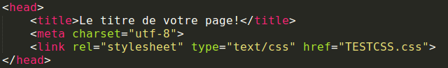
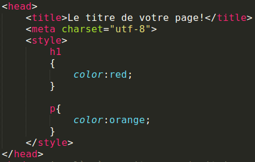
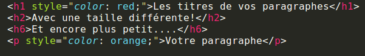
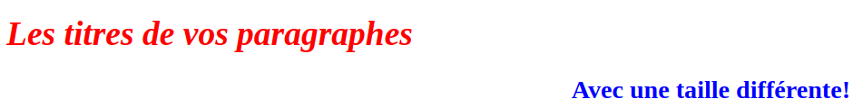
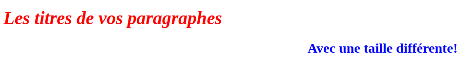

Le CSS (Cascading Style Sheets) est aussi un langage de présentation qui vient compléter le HTML. C'est elle qui s'occupe de la forme de la page web.
Sa syntaxe est relativement simple. On indique en premier le selector(ID,class, balise), c'est à dire la partie de l'HTML que l'on veut modifier, suivi de ses propriétés. Comme le montre l'exemple:
Ici, le sélecteur est h1 (le titre) et ce dernier sera écrit en bleu
Afin d'aller plus vite, on peut regrouper les sélecteurs entre eux surtout si on veut leur appliquer le même style.
En CSS, il est aussi recommandé d'utiliser les commentaires /* Commentaire */
Comment relier le CSS au HTML?
Il existe 3 méthodes pour relier le code CSS à celui du HTML:
- Style externe: créer un autre fichier .css et écrire <link rel="stylesheet" type="text/css" href="nomDuFichier"/> dans la balise <head> du fichier HTML.

- Style interne: vous pouvez écrire directement votre code CSS dans l'entête HTML.

- Style dans les balises: il est possible d'appliquer du CSS directement dans les balises HTML avec l'attribut style.

Les couleurs
Pour indiquer une couleur vous pouvez indiquer le nom (red,green,blue..) en RGB(valeur Rouge, valeur Verte, valeur Bleue) ou en héxadécimale (#FF7F50 pour Coral)

Les propriétés
Vous connaissez déjà une propriété.. Si, si je vous jure! C'est la propriété color.
Elle permet d'affecter une couleur.Pour la couleur de fond c'est la propriété background-color
Les fonts
Il est possible de modifier la forme de l'écriture grâce à font-style, par exemple si on veut écrire en italique on utilisera font-style:italic, en oblique avec font-size:oblique ou en normal font-size:normal
Le texte
Pour aligner un texte en CSS, on utilise text-align avec comme valeurs center,left,right.<
Ce qui donne: h4{text-align:left;}
 

Le float
float en français veut dire flottantcette propriété permet de faire flotter une image à n'importe quel endroit d'un texte. Cette propriété est complétée avec les valeurs left ou right.
Elle s'écrira donc ainsi:
img { float:left; }
Les bordures
Pour encadrer du contenu de manière plus esthétique, on utilise border pour modifier la largeur, la couleur ou le type de bordure(tiret,pointillet..) que l'on souhaite voir apparaître.
- border-width: modifie la largeur en pixel
- border-color: modifie la couleur avec le nom, en hexadécimale ou en RBG comme pour la propriété color vue précédemment.
- border-style: modifie le type de bordure et s'offre à vous un éventail de choix comme:
dotted(pointillés), dashed(tirets), solid(trait), double, groove(relief)...
Les Marges
Lorsqu'on rédige un texte dans un bloc, on peut déterminer la marge intérieure (entre le texte et la bordure) et la marge extérieure (entre 2 blocs différents) pour plus de visibilité. On utilise la propriété margin pour modifier la marge extérieure et padding pour l'intérieure, en pixel. Il est possible d'être plus précis en couplant la margin avec des valeurs comme top,bottom,right,left.
On aura donc: p { margin-top:120px}
Le modèle des boîtes
Avec ce que nous avions vu précédemment, il est possible de modifier tout et n'importe quoi sur une page web. Le modèle des boîtes permet de positionner les différents blocs contenus sur la page. Grâce aux notions de marges, bordures, block, inline. Wait wat? Block?Inline?
AHEM! La balise block en HTML, permet de délimiter les paragraphes entre eux autrement dit elle crée des blocs et les place l'un au dessus de l'autre. Quant à la balise inline, elle permet de placer des textes en ligne, l'un à côté de l'autre.